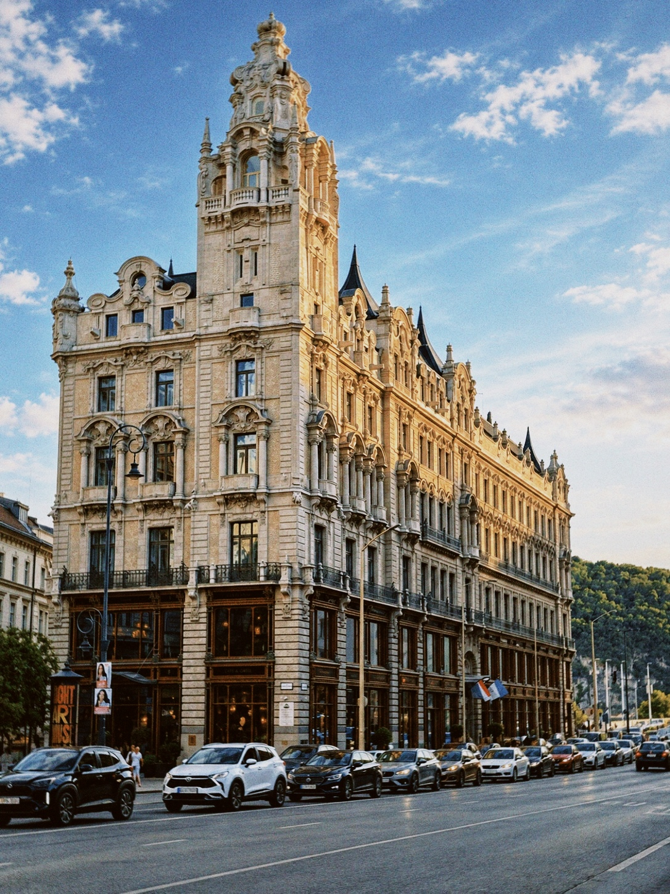

Budapest, 2024
Párisi Udvar in Budapest, Hungary, with its ornate historic facade, tower and street scene under a blue sky.

Párisi Udvar in Budapest, Hungary, with its ornate historic facade, tower and street scene under a blue sky.